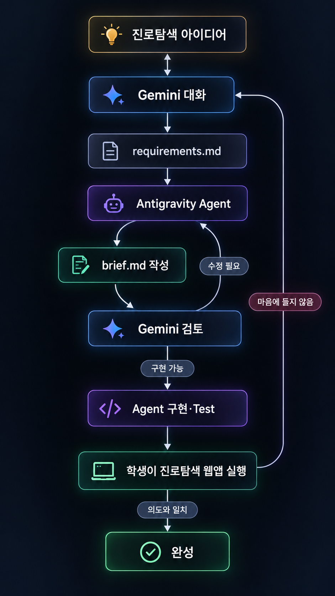

AI VIBE CODING · HIGH SCHOOL MINI HACKATHON
AI Vibe Coding Mini Hackathon
Gemini와 Antigravity IDE를 이용해, 코딩 완전 입문 고등학생이 “내 생각을 AI에게 설명하면 실제 Web App으로 만들 수 있다”는 경험을 얻는 교육 프로그램. 전문 개발 지식을 많이 가르치는 대신, 작고 명확한 목표를 정하고 AI와 대화하고, 결과를 직접 확인·수정하는 Vibe Coding의 핵심 경험에 집중한다.
먼저 이해할 개념 — 우리는 무엇을 배우는가
DEDUCTIVE START · WHY → WHAT → HOW
Vibe Coding은 코드를 먼저 외우는 활동이 아니라,
내가 원하는 것을 명확히 설명하고 → AI가 만든 결과를 실행해 보고 → 마음에 들 때까지 수정하는 개발 방식을 경험하는 것이다.
학생이 “코딩은 어렵다”보다 “내 생각을 작동하게 만들 수 있다”를 먼저 경험하도록 한다.
첫 실습은 간단한 Web Game, 최종 결과물은 교육용 진로 관심 탐색 Web App이다.
Gemini로 의도를 구체화하고, Antigravity IDE Agent가 구현·Test하며, 학생이 실행 결과를 판단하고 수정한다.
따라서 수업의 성패는 “학생이 몇 줄의 코드를 이해했는가”가 아니라, 자신의 의도를 말로 설명하고, AI의 작업을 관찰하고, 실제 결과를 보고 수정할 수 있게 되었는가로 판단한다.
교육 목표 — 작게 완성하고, 혼자 더 해보고 싶게 만든다
LEARNING GOAL
Vibe Coding의 핵심 원리를 체험
아이디어 → 대화 → 요구사항 → Agent 구현 → 실행 → 수정의 전체 Loop를 한 번 끝까지 경험한다.
기술보다 의도 표현을 먼저
학생이 “무엇을 만들지, 누구를 위해 만들지, 언제 완성으로 볼지”를 자신의 말로 정한다.
작은 성공 경험 확보
복잡한 기능을 넣지 않고, 제한된 시간 안에 실제로 작동하는 Web App을 완성한다.
수업 뒤의 자기주도 동기 형성
“다음에는 내가 좋아하는 주제로도 만들어 보고 싶다”는 마음을 갖고 돌아가는 것을 최종 교육 성과로 본다.
사전 Deep Research — 문항부터 만들지 않는다
TEACHER PREPARATION · RESEARCH BEFORE BUILD
최종 프로젝트의 진로 탐색 문항은 AI에게 즉석에서 “18문항 만들어 줘”라고 요청해 만드는 것이 아니다. 교사가 수업 전에 신뢰할 수 있는 기존 진로·직업 흥미 탐색 방식과 우수 사례를 조사하고, 그 결과를 정리한 뒤 교육용 문항으로 축약한다.
| Deep Research 산출물 | 수업에서 쓰는 이유 |
|---|---|
| Source Summary | 어떤 사이트·이론·교육 자료를 참고했는지 근거를 남긴다. |
| Interest Mapping Table | 기존 분류 체계와 우리 교육용 관심 분야의 대응 관계를 정리한다. |
| Question Bank | 고등학생이 읽기 쉬운 행동·상황 중심 문항을 확보한다. |
| Scoring Rule | 분야별 점수를 계산하고 Top 2를 고르는 단순하고 설명 가능한 규칙을 정한다. |
| Result Guide | Top 2에 대해 관심 분야 설명, 대표 활동, 다음 탐색 행동을 제공한다. |
※ Deep Research는 교사의 사전 준비 단계이다. 학생이 수업 시간에 복잡한 진로 이론을 학습하거나 검증하는 활동으로 만들지 않는다.
진로 관심 탐색 모델 — “직업 결정”이 아니라 “다음 탐색의 출발점”
CAREER INTEREST EXPLORATION · EDUCATIONAL PROTOTYPE
앱의 목적은 학생의 적합 직업을 확정하는 것이 아니다. 사전 조사로 만든 질문에 답하면서 자신이 상대적으로 관심을 보이는 분야 두 개를 발견하고, 그 분야에서 무엇을 더 해볼지 생각하게 하는 것이다.
“당신에게 맞는 직업은 ○○입니다”가 아니라 “현재 응답에서는 ○○와 △△ 분야에 상대적으로 높은 관심이 나타났습니다. 이 분야의 활동을 더 경험해 보세요.” 라고 안내한다.
| 기획서의 기존 후보 영역 | 최종 적용 원칙 |
|---|---|
| 기술·제작 / 탐구·분석 / 창작·표현 / 사람·지원 / 기획·조정 / 사회·환경 | 이 6개 영역은 초기 설계안으로 사용하되, 사전 Deep Research에서 분류 근거와 문항 타당성을 검토한 뒤 수업용 최종 명칭과 문항을 확정한다. |
Vibe Coding 학습 흐름 — 학생은 “개발자”보다 “의도 결정자”가 된다
GEMINI ↔ ANTIGRAVITY AGENT · HUMAN-IN-THE-LOOP
아래 도해는 학생이 진로탐색 Web App을 만들 때 경험할 기본 Workflow다. 처음에는 교사가 함께 따라가며 보여주고, 이후에는 같은 절차를 학생이 스스로 반복한다.

| 단계 | 학생이 하는 일 | AI가 하는 일 | 학생이 배우는 것 |
|---|---|---|---|
| 1 | 원하는 것을 설명한다. | 질문과 선택지로 의도를 구체화한다. | 막연한 생각도 질문을 통해 구체화할 수 있다. |
| 2 | 구체화된 요구사항을 확인하고 자기 생각과 맞는지 판단한다. | 구체화된 요구사항을 requirements.md로 정리한다. | 내가 결정해야 할 것은 “무엇을 만들 것인가”이다. |
| 3 | 문서를 Agent에 전달하고 작업을 관찰한다. | 계획·파일·코드·Test를 만든다. | AI가 실제 개발 작업을 수행할 수 있다. |
| 4 | 두 AI 사이에서 검토 결과를 전달한다. | 누락·충돌·과도한 기능을 수정한다. | 한 AI의 결과도 다른 AI로 검토할 수 있다. |
| 5 | 직접 실행하고 화면·기능을 확인한다. | 사용자 피드백에 따라 수정한다. | 최종 판단은 사용자인 내가 한다. |
수업 운영 구성 — 시범 → 안내형 실습 → 자기주도 Mini Hackathon
2H ONBOARDING + 2H GUIDED GAME + 6H HACKATHON
| 구간 | 핵심 활동 | 완료 증거 |
|---|---|---|
| 사전 준비 | 교사가 Deep Research를 완료하고 진로 관심 분류·문항·점수 규칙·결과 문구를 확정 | Research Summary + Question Bank |
| 온보딩 2시간 | Gemini·Antigravity IDE 실행, Local Web Page 열기, 화면을 보여주며 AI에게 질문하는 법 익히기 | 자신의 노트북에서 Local 실행 |
| 게임 실습 2시간 | 색상·조작·난이도 등 몇 가지를 선택해 간단한 Falling Block Puzzle 제작. 위 Workflow를 교사와 함께 경험 | 학생 선택이 반영된 작동 게임 |
| Mini Hackathon 6시간 | 교사가 준비한 진로 탐색 자료를 바탕으로 요구사항 작성 → Agent 구현 → 친구와 Test → 수정 | 작동하는 진로 관심 탐색 Web App |
| 마무리 | 작품 시연, “내가 정한 것 / AI가 한 것 / 다음에 만들고 싶은 것” 발표 | 짧은 발표와 성찰 |
구현 범위 — 어려운 기능은 넣지 않는다
MVP FIRST · KEEP IT SMALL
이번 수업에서 만든다 MUST
- 한 화면씩 질문을 보여주는 간단한 UI
- 5점 척도 선택
- 분야별 점수 합산
- Top 2 관심 분야 표시
- 각 분야의 짧은 설명과 다음 탐색 활동
- PC·Smartphone에서 읽기 좋은 Responsive 화면
- 친구와 직접 사용 Test 후 문구·화면 수정
이번 수업에서는 하지 않는다 NOT NOW
- AI가 학생의 성격·적성을 자동 판정하는 복잡한 분석
- 전문 심리검사 또는 실제 진로진단을 대체하는 기능
- 복잡한 회원가입·로그인
- 학생 개인정보 수집
- 복잡한 Database·Dashboard·관리자 기능
- 실시간 추천 Engine·Machine Learning
- 코드 문법·Framework 구조를 시험하는 활동
학생과 교사의 역할 — 정답을 주기보다 다음 행동을 찾게 한다
ROLE DESIGN
학생의 세 가지 역할
- Intent Owner — 어떤 앱을 원하는지 결정
- AI Relay Operator — Gemini와 Antigravity 사이에서 필요한 내용을 전달
- User Tester — 직접 써보고 “내 의도와 같은가”를 판단
교사의 세 가지 역할
- Research Curator — 수업 전에 진로탐색 근거 자료와 문항을 준비
- Safety Coach — 계정·Credential·결제·삭제 위험을 관리
- Process Facilitator — 정답 대신 “다음에 무엇을 확인할까?”를 질문
평가와 성공 기준 — 코드 지식보다 과정과 결과를 본다
ASSESSMENT
| 평가 영역 | 기준 | 배점 예시 |
|---|---|---|
| 의도 표현 | 누구를 위한 어떤 앱인지 자신의 말로 설명 | 20 |
| 요구사항 소유 | 필요 기능·하지 않을 기능·완료 조건을 확인 | 20 |
| AI 협업 과정 | Gemini와 Agent 사이에서 내용을 빠뜨리지 않고 전달 | 20 |
| 작동 결과 | 질문 → 점수 → Top 2 → 탐색 활동이 실제로 동작 | 20 |
| User Test와 개선 | 친구가 사용하며 발견한 문제를 자연어로 수정 요청 | 10 |
| 성찰과 동기 | 다음에 혼자 만들고 싶은 것을 자신의 말로 설명 | 10 |
작동하는 Web App을 끝까지 완성한다.
AI가 한 일과 내가 결정한 일을 구분해 설명한다.
“다음 것을 혼자 만들어 보고 싶다”는 구체적인 아이디어를 말한다.
안전·윤리·공개 원칙
SAFETY · PRIVACY · PUBLIC BOUNDARY
학생 보호
- 비밀번호, 인증코드, 전화번호, 학교·학번 등 개인정보를 AI 대화에 넣지 않는다.
- API Key, Token, 결제정보가 화면 캡처에 보이지 않게 한다.
- 파일 삭제·관리자 권한·유료 전환은 교사 확인 없이 실행하지 않는다.
진로 결과의 한계
- 이 결과는 전문 진로검사·심리검사를 대체하지 않는다.
- Top 2는 “적합 직업 판정”이 아니라 “관심 분야 탐색의 시작점”이다.
- 결과 화면에 교육용 참고자료임을 명시한다.
공개·제출 범위
- 작동하는 Web App, 간단한 기능 설명, 사용 방법, 학생 성찰만 공개한다.
- AI 대화 전문, 내부 작업 지시, Agent Log, Credential, 개인정보는 공개하지 않는다.
기술 범위 통제
- 기능이 늘어날 때마다 “이 기능이 학습 목표에 꼭 필요한가?”를 먼저 묻는다.
- 필수 기능 완성 전에는 추가 기능을 구현하지 않는다.
최종 교육 메시지
TAKEAWAY
이 과정은 “짧은 시간에 개발자가 되는 수업”이 아니다. 학생이 자신이 원하는 것을 AI에게 설명하고, AI가 만든 결과를 직접 확인하고, 마음에 들지 않는 부분을 다시 말로 고쳐 가면서 작은 Digital Product를 완성하는 경험을 주는 수업이다.
“나는 모든 코드를 알지 못해도, 내가 원하는 것을 명확하게 설명하고 AI가 만든 결과를 직접 확인·수정하면서 필요한 것을 만들 수 있다. 다음에는 내 아이디어로 다시 해보고 싶다.”
이 문장을 학생이 자신의 말로 바꾸어 말할 수 있다면 이번 Mini Hackathon의 교육 목표는 달성된 것으로 본다.